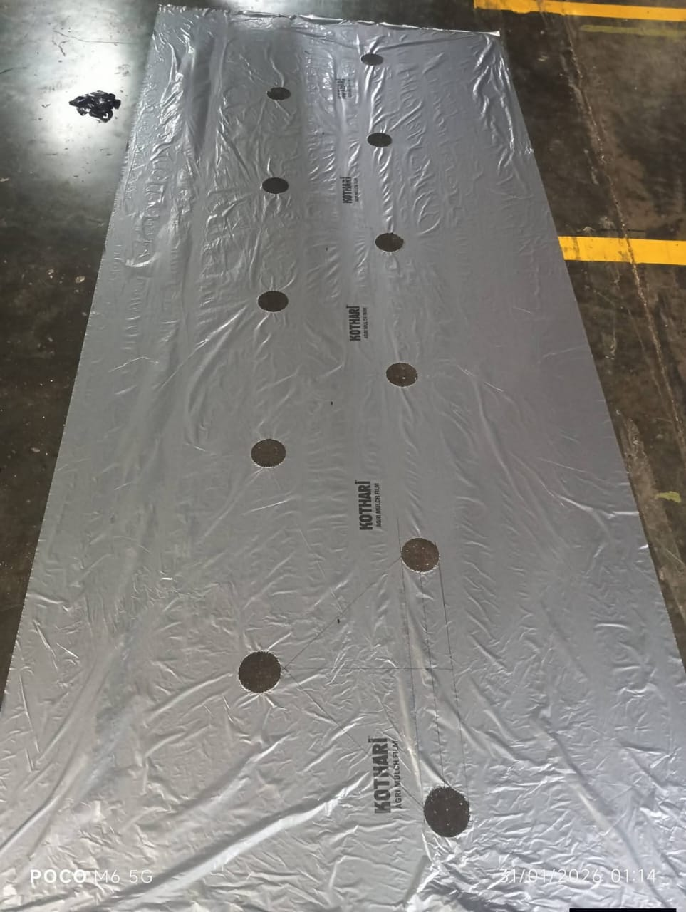
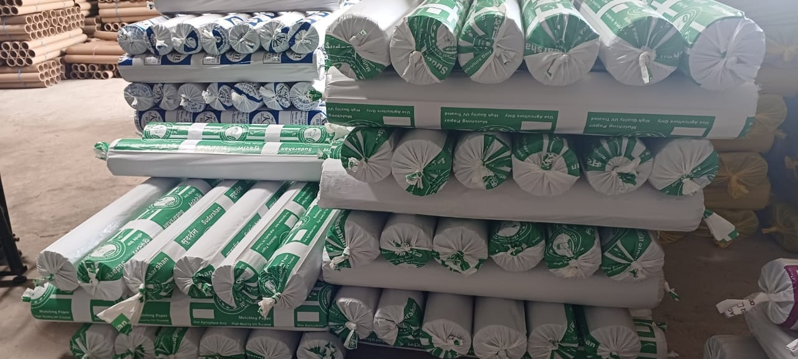

Materials made for the field, the nursery and the factory.
Mulching film to control weeds, save water and raise yield in vegetable and fruit crops.

Pre-cut mulch sheets with the hole size and spacing your crop needs.

Custom and industrial films in your size, GSM and micron, supplied in bulk.
Cotton, polyester and other yarn cones, plus jute thread in 6, 7 and 8 ply.